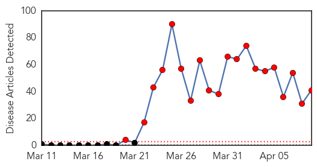
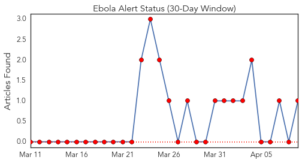
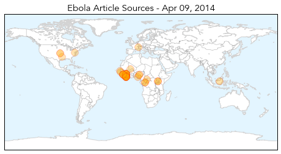
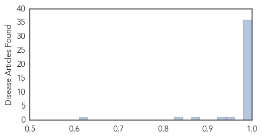

Ebola
30-Day Web Trend
20 alerts, 0 warnings

30-Day Twitter Trend
12 alerts, 0 warnings

Article Locations
Article Confidences
Top Articles:
- 1.000
- Ebola outbreak could last months in West Africa, officials say
- 1.000
- WHO raises concerns over Ebola outbreak
- 1.000
- ‘West Africa Ebola outbreak among most challenging ever’ – BorneoPost Online
- 1.000
- Kenya : Government cautious of possible Ebola penetration to the country
- 1.000
- WHO officials say deadly West Africa Ebola outbreak could last months
- 1.000
- Ebola outbreak could last months Republican American
- 1.000
- The Portland Press Herald / Maine Sunday Telegram
- 1.000
- Nigerian Government raises alert on Ebola virus
- 1.000
- As Ebola spreads in Africa, how worried should West be?
- 1.000
- Fighting and Eradicating Ebola in West Africa Could Take Months, No Travel Restrictions Yet to Guinea – WHO
- 1.000
- Guinea's first Ebola survivors return home
- 1.000
- Ebola outbreak in W Africa to last for months
- 1.000
- Ebola outbreak may last months
- 1.000
- WHO: Ebola outbreak one of ‘most challenging’
- 1.000
- UN & health partners work to slow Ebola outbreak in West Africa
- 1.000
- 'Most challenging' deadly disease outbreak
- 1.000
- The Ebola Outbreak 3 Weeks In: Dire But Not Hopeless
- 1.000
- iafrica.com West Africa braces against Ebola
- 1.000
- Guinea raises Ebola death toll to 95 (Update)
- 1.000
- 'Ebola outbreak most challenging ever'
- 0.999
- Guinea's first Ebola survivors return to family, stigma remains
- 0.999
- Ebola spreads in West Africa -- NationNews Barbados -- Local, Regional and International News nationnews.com
- 0.999
- Ebola death toll in West Africa rises to 106
- 0.999
- Guinea's first Ebola survivors return to family, stigma remains
- 0.998
- The Big Read: Escape from grip of Ebola
- 0.998
- Ebola has infected nearly 200 people in Guinea and Liberia, WHO fears
- 0.998
- WHO Working on Containing the Spread of Ebola Virus and Rumours of Fictitious Cure
- 0.998
- First Ebola cases suspected in Mali; regional death toll tops 90
- 0.998
- Ebola expected to terrorise West Africa for ‘months’ – WHO
- 0.998
- Atiku seeks proactive measures
- 0.997
- UPDATE 1-Scale of Guinea's Ebola epidemic unprecedented -aid agency
- 0.995
- UPDATE 2-Mob attacks Ebola treatment centre in Guinea, suspected cases reach Mali
- 0.992
- The World On Arirang
- 0.990
- Samaritan's Purse takes precautions but keeps workers on front lines to fight Ebola
- 0.989
- UNICEF-Liberia Ebola Outbreak: SitRep #13, 9 April 2014 - Liberia
- 0.984
- Mali suspects first Ebola cases as regional death toll tops 90
- 0.947
- PostBulletin.com
- 0.935
- NMA Bemoans Dwindling Budgetary Allocation to Health Sector, Articles
- 0.882
- Officials say outbreak could last for months
- 0.843
- Health Highlights: April 9, 2014
- 0.611
- Biohacking and the problem of bioterrorism
Top Tweets:
- 0.521
- OMG Nigeria is in real danger of the dreaded Ebola fever, the Federal Government has said.”
Influenza
30-Day Web Trend
0 alerts, 0 warnings

30-Day Twitter Trend
0 alerts, 0 warnings

Article Locations

Article Confidences

Top Articles:
- 0.984
- Abu Dhabi resident diagnosed with MERS virusUAE
- 0.945
- Scientists say UK wasted £560m on flu drugs that are not proven
- 0.933
- Review raises questions about Tamiflu
- 0.902
- Tamiflu drug 'largely ineffective' in reducing hospitalisation
- 0.852
- Study casts doubt on Tamiflu value
- 0.831
- Government's £424m stock of bird flu drug ‘not fully effective’
- 0.756
- Risk of Food Poisoning Twice as High in Restaurants, Safety Alert Says
- 0.747
- Restaurants Pose Twice the Risk of Foodborne Outbreaks as Homes, CSPI Data Show
- 0.619
- Researchers, regulators and Roche row over stockpiled drug Tamiflu
- 0.602
- New clues to why RSV sends babies to the hospital
- 0.577
- Flu Drugs Challenged in Full Data Review
- 0.532
- Row erupts over influenza drug Tamiflu › News in Science (ABC Science)
- 0.502
- UNC researchers find genetic trigger for RSV-induced infant hospitalizations
Top Tweets:
-
No tweets found for Apr 09, 2014